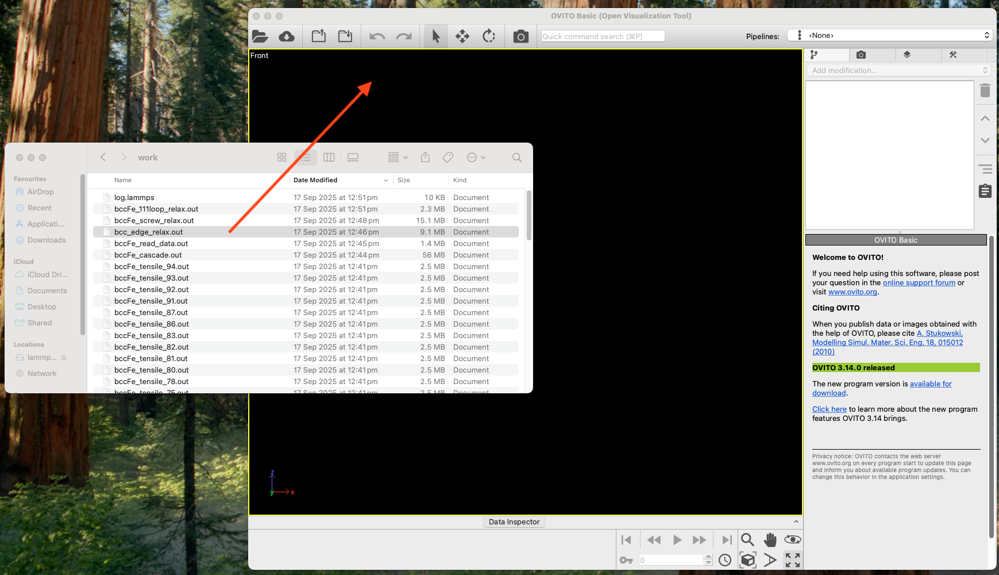
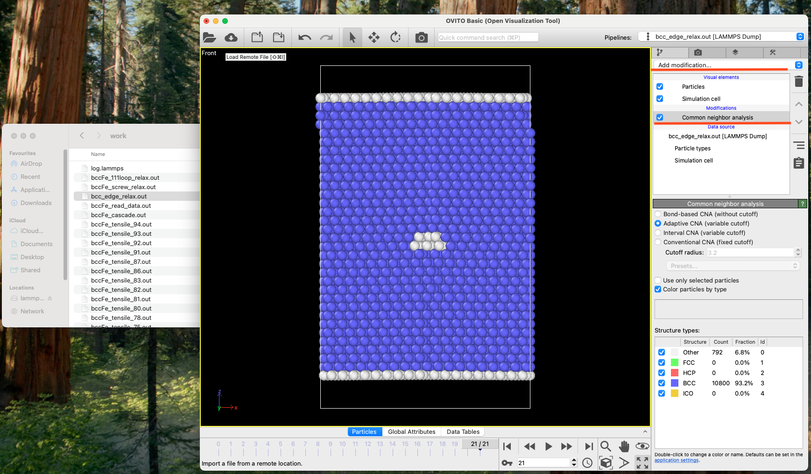
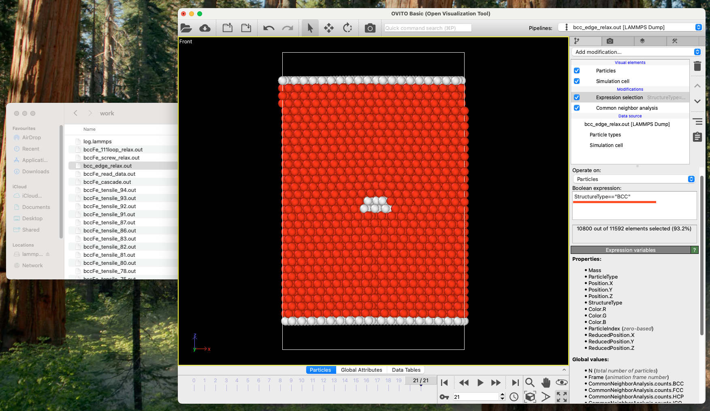

Common Neighbor Analysis (CNA) of an edge dislocation using OVITO
Select the file you want to analyse and drag onto the black pane of OVITO.

Move the slider at the bottom till the end.

Click "Add modification", then you'll see a pull-down menu where you choose "Common neighbour analysis". If you don't see it, drag the mouse down.

Click "Add modification" again, and choose "Expression selection". Then type StructureType=="BCC" followed by Enter at an empty pane under "Boolean expression".

Click "Add modification" again, and choose "Delete selected".

Go back to Inserting Edge Dislocation